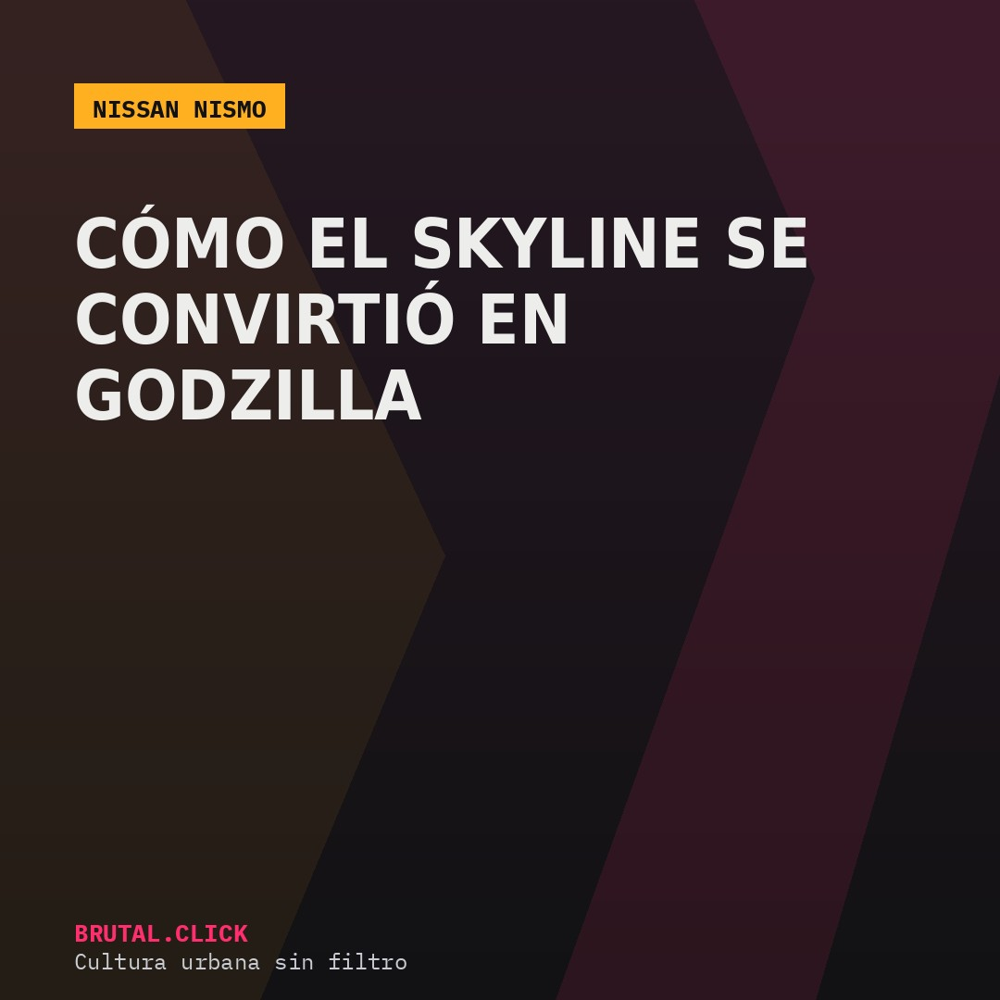
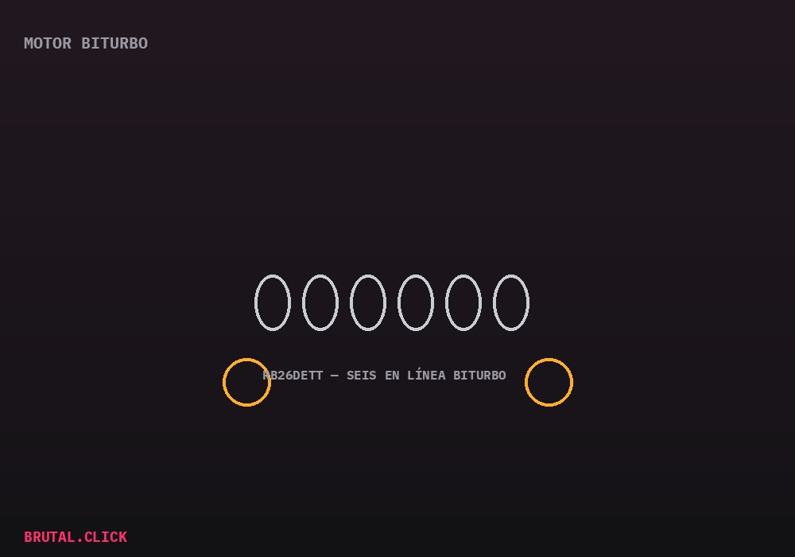

Este artículo incluye enlaces de afiliación a productos relacionados (modelos a escala, merchandising oficial). No hay comisión posible por la venta de vehículos nuevos. Si compras a través de estos enlaces, podemos recibir una pequeña comisión sin coste extra para ti.

NISMO (Nissan Motorsports International) es la división de competición de Nissan, y su capítulo más recordado tiene que ver con un dominio tan absoluto que la propia prensa deportiva tuvo que ponerle un apodo a la altura: "Godzilla".
El Grupo A australiano y un apodo que se quedó para siempre
A principios de los 90, el Nissan Skyline GT-R (R32) llegó al Turismo de Producción australiano y ganó de forma tan sistemática que otros equipos y la prensa local empezaron a llamarlo "Godzilla" — una criatura imparable frente a la que el resto de fabricantes parecían tener pocas opciones reales. El apodo terminó pegándose a toda la saga GT-R que vino después.

El corazón técnico de ese dominio fue el motor RB26DETT, un seis cilindros en línea con doble turbo, combinado con el sistema de tracción total ATTESA E-TS, que repartía la potencia entre ejes de forma electrónica según las condiciones de agarre — una sofisticación poco habitual para la época en un coche de producción relativamente accesible.
Una influencia que llega hasta hoy
Más de tres décadas después, el ADN técnico desarrollado para el R32 sigue influyendo en cómo Nissan plantea sus deportivos de altas prestaciones, y el propio término "Godzilla" se ha convertido en sinónimo casi oficial del GT-R en la cultura del motor, mucho más allá del círculo de aficionados al motorsport de los 90.
Modelo a escala Nissan Skyline GT-R R32 1:18
El original "Godzilla"Camiseta NISMO oficial
Merchandising con licencia de la marcaEnlaces pendientes de activar el programa de afiliados.